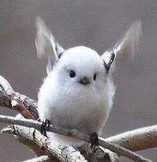
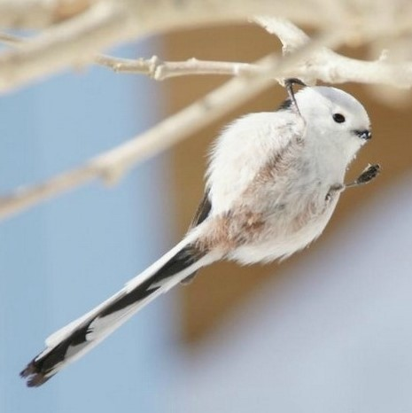
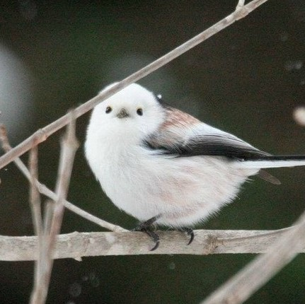
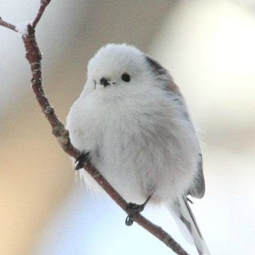
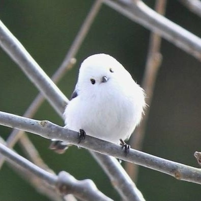

银喉长尾山雀
Aegithalos caudatus
有人说银喉长尾山雀是日本独有鸟类，这个说法不对，在中国东北、华北、华中和华东以及西南地区银喉长尾山雀还算是比较常见的留鸟，它还有许多别称，比如十姐妹、洋红儿、银颏山雀。它们可以生活在寒冷的冬季，浑身披着厚厚的羽绒所以看上去像一团糯米糍，所以非常呆萌。
银喉长尾山雀叫声细弱短促，似“Jie-jie-jing-jing-jing-jing”，有时为单纯的“Jing-jing……”，常连续多次很少变化。
银喉长尾山雀秋季成小家族游荡，至冬季可汇成多达100只的较大群体；在气温低于20℃的冬夜，它们通常蜷缩在一起成群栖息，以减小热量散失（它们的体温始终保持在略高于40℃的水平）。



